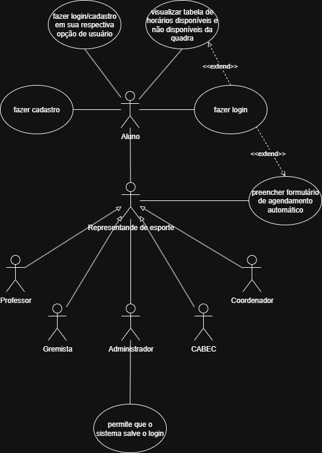
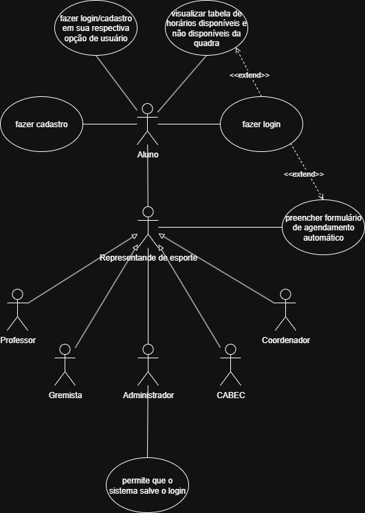

QUADRACRON
Bem-vindo(a) ao QuadraCron! Aqui você conseguirá agendar e/ou ver o cronograma da quadra poliesportiva do IFAL - Campus Palmeira dos Índios.
🎯 1. Objetivo
O nosso objetivo com o QuadraCron é resolver os problemas com o uso da quadra poliesportiva do IFAL - Campus Palmeira dos Índios, criando um software onde será possível agendar horários para o uso do local, em que os docentes ou discentes que desejam utilizá-la possam acessar e ver se há horários disponíveis ou não, e caso haja, poderão agendar, evitando constrangimentos e trazendo mais organização.
👥 2. Público Alvo e Funções
O sistema QuadraCron é destinado a diferentes perfis de usuários, cada um com um conjunto específico de permissões para garantir a organização e o controle da utilização da quadra.
Administradores Controle Total
Funções: Controle total do sistema, automatização do login, fiscalização de cadastros, comprovantes de funções e capacidade de agendar horários na quadra.
Agendadores (Representantes, Professores, Coordenadores, Grêmio e CABEC) Agendamento & Visualização
Funções: Agendam horários na quadra e podem ver o cronograma completo de agendamentos.
- Representantes dos Esportes
- Professores e Coordenadores
- Membros do Grêmio
- CABEC
Alunos Visualização
Funções: Possuem permissão limitada. Apenas conseguem visualizar o cronograma (horários já agendados) da quadra.
📋 3. Requisitos
Lista dos requisitos funcionais (o que o sistema deve fazer) e não-funcionais (qualidade do sistema).
Funcionais:
- O sistema deve permitir o cadastro de novos projetos e tarefas.
- O sistema deve calcular automaticamente a porcentagem de conclusão do projeto.
- O sistema deve enviar notificações por e-mail sobre prazos vencidos.
Não-Funcionais:
- O tempo de carregamento das páginas não deve exceder 3 segundos.
- O sistema deve suportar 500 usuários ativos simultaneamente.
- Os dados devem ser criptografados usando o protocolo SSL/TLS.
📝 4. Histórias de Usuários
Exemplos de histórias para guiar o desenvolvimento das funcionalidades do sistema.
🖼️ 5. Diagramas
Representações visuais da arquitetura e do fluxo de dados do sistema. Diagrama de Classes e Diagrama de Casos de Uso, respectivamente.
 

👨💻 6. Contato da Equipe de Desenvolvimento
Contato da equipe responsável pelo desenvolvimento do QuadraCron.